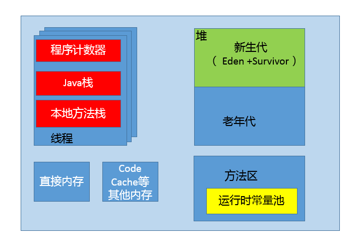

- 00 开篇词 以面试题为切入点，有效提升你的Java内功.md.html
- 01 谈谈你对Java平台的理解？.md.html
- 02 Exception和Error有什么区别？.md.html
- 03 谈谈final、finally、 finalize有什么不同？.md.html
- 04 强引用、软引用、弱引用、幻象引用有什么区别？.md.html
- 05 String、StringBuffer、StringBuilder有什么区别？.md.html
- 06 动态代理是基于什么原理？.md.html
- 07 int和Integer有什么区别？.md.html
- 08 对比Vector、ArrayList、LinkedList有何区别？.md.html
- 09 对比Hashtable、HashMap、TreeMap有什么不同？.md.html
- 10 如何保证集合是线程安全的_ ConcurrentHashMap如何实现高效地线程安全？.md.html
- 11 Java提供了哪些IO方式？ NIO如何实现多路复用？.md.html
- 12 Java有几种文件拷贝方式？哪一种最高效？.md.html
- 13 谈谈接口和抽象类有什么区别？.md.html
- 14 谈谈你知道的设计模式？.md.html
- 15 synchronized和ReentrantLock有什么区别呢？.md.html
- 16 synchronized底层如何实现？什么是锁的升级、降级？.md.html
- 17 一个线程两次调用start()方法会出现什么情况？.md.html
- 18 什么情况下Java程序会产生死锁？如何定位、修复？.md.html
- 19 Java并发包提供了哪些并发工具类？.md.html
- 20 并发包中的ConcurrentLinkedQueue和LinkedBlockingQueue有什么区别？.md.html
- 21 Java并发类库提供的线程池有哪几种？ 分别有什么特点？.md.html
- 22 AtomicInteger底层实现原理是什么？如何在自己的产品代码中应用CAS操作？.md.html
- 23 请介绍类加载过程，什么是双亲委派模型？.md.html
- 24 有哪些方法可以在运行时动态生成一个Java类？.md.html
- 25 谈谈JVM内存区域的划分，哪些区域可能发生OutOfMemoryError_.md.html
- 26 如何监控和诊断JVM堆内和堆外内存使用？.md.html
- 27 Java常见的垃圾收集器有哪些？.md.html
- 28 谈谈你的GC调优思路_.md.html
- 29 Java内存模型中的happen-before是什么？.md.html
- 30 Java程序运行在Docker等容器环境有哪些新问题？.md.html
- 31 你了解Java应用开发中的注入攻击吗？.md.html
- 32 如何写出安全的Java代码？.md.html
- 33 后台服务出现明显“变慢”，谈谈你的诊断思路？.md.html
- 34 有人说“Lambda能让Java程序慢30倍”，你怎么看？.md.html
- 35 JVM优化Java代码时都做了什么？.md.html
- 36 谈谈MySQL支持的事务隔离级别，以及悲观锁和乐观锁的原理和应用场景？.md.html
- 37 谈谈Spring Bean的生命周期和作用域？.md.html
- 38 对比Java标准NIO类库，你知道Netty是如何实现更高性能的吗？.md.html
- 39 谈谈常用的分布式ID的设计方案？Snowflake是否受冬令时切换影响？.md.html
- 周末福利 谈谈我对Java学习和面试的看法.md.html
- 结束语 技术没有终点.md.html
- 捐赠
25 谈谈JVM内存区域的划分，哪些区域可能发生OutOfMemoryError_
今天，我将从内存管理的角度，进一步探索Java虚拟机（JVM）。垃圾收集机制为我们打理了很多繁琐的工作，大大提高了开发的效率，但是，垃圾收集也不是万能的，懂得JVM内部的内存结构、工作机制，是设计高扩展性应用和诊断运行时问题的基础，也是Java工程师进阶的必备能力。
今天我要问你的问题是，谈谈JVM内存区域的划分，哪些区域可能发生OutOfMemoryError？
典型回答
通常可以把JVM内存区域分为下面几个方面，其中，有的区域是以线程为单位，而有的区域则是整个JVM进程唯一的。
首先，程序计数器（PC，Program Counter Register）。在JVM规范中，每个线程都有它自己的程序计数器，并且任何时间一个线程都只有一个方法在执行，也就是所谓的当前方法。程序计数器会存储当前线程正在执行的Java方法的JVM指令地址；或者，如果是在执行本地方法，则是未指定值（undefined）。
第二，Java虚拟机栈（Java Virtual Machine Stack），早期也叫Java栈。每个线程在创建时都会创建一个虚拟机栈，其内部保存一个个的栈帧（Stack Frame），对应着一次次的Java方法调用。
前面谈程序计数器时，提到了当前方法；同理，在一个时间点，对应的只会有一个活动的栈帧，通常叫作当前帧，方法所在的类叫作当前类。如果在该方法中调用了其他方法，对应的新的栈帧会被创建出来，成为新的当前帧，一直到它返回结果或者执行结束。JVM直接对Java栈的操作只有两个，就是对栈帧的压栈和出栈。
栈帧中存储着局部变量表、操作数（operand）栈、动态链接、方法正常退出或者异常退出的定义等。
第三，堆（Heap），它是Java内存管理的核心区域，用来放置Java对象实例，几乎所有创建的Java对象实例都是被直接分配在堆上。堆被所有的线程共享，在虚拟机启动时，我们指定的“Xmx”之类参数就是用来指定最大堆空间等指标。
理所当然，堆也是垃圾收集器重点照顾的区域，所以堆内空间还会被不同的垃圾收集器进行进一步的细分，最有名的就是新生代、老年代的划分。
第四，方法区（Method Area）。这也是所有线程共享的一块内存区域，用于存储所谓的元（Meta）数据，例如类结构信息，以及对应的运行时常量池、字段、方法代码等。
由于早期的Hotspot JVM实现，很多人习惯于将方法区称为永久代（Permanent Generation）。Oracle JDK 8中将永久代移除，同时增加了元数据区（Metaspace）。
第五，运行时常量池（Run-Time Constant Pool），这是方法区的一部分。如果仔细分析过反编译的类文件结构，你能看到版本号、字段、方法、超类、接口等各种信息，还有一项信息就是常量池。Java的常量池可以存放各种常量信息，不管是编译期生成的各种字面量，还是需要在运行时决定的符号引用，所以它比一般语言的符号表存储的信息更加宽泛。
第六，本地方法栈（Native Method Stack）。它和Java虚拟机栈是非常相似的，支持对本地方法的调用，也是每个线程都会创建一个。在Oracle Hotspot JVM中，本地方法栈和Java虚拟机栈是在同一块儿区域，这完全取决于技术实现的决定，并未在规范中强制。
考点分析
这是个JVM领域的基础题目，我给出的答案依据的是JVM规范中运行时数据区定义，这也和大多数书籍和资料解读的角度类似。
JVM内部的概念庞杂，对于初学者比较晦涩，我的建议是在工作之余，还是要去阅读经典书籍，比如我推荐过多次的《深入理解Java虚拟机》。
今天这一讲作为Java虚拟机内存管理的开篇，我会侧重于：
分析广义上的JVM内存结构或者说Java进程内存结构。
谈到Java内存模型，不可避免的要涉及OutOfMemory（OOM）问题，那么在Java里面存在哪些种OOM的可能性，分别对应哪个内存区域的异常状况呢？
注意，具体JVM的内存结构，其实取决于其实现，不同厂商的JVM，或者同一厂商发布的不同版本，都有可能存在一定差异。我在下面的分析中，还会介绍Oracle Hotspot JVM的部分设计变化。
知识扩展
首先，为了让你有个更加直观、清晰的印象，我画了一个简单的内存结构图，里面展示了我前面提到的堆、线程栈等区域，并从数量上说明了什么是线程私有，例如，程序计数器、Java栈等，以及什么是Java进程唯一。另外，还额外划分出了直接内存等区域。- 
这张图反映了实际中Java进程内存占用，与规范中定义的JVM运行时数据区之间的差别，它可以看作是运行时数据区的一个超集。毕竟理论上的视角和现实中的视角是有区别的，规范侧重的是通用的、无差别的部分，而对于应用开发者来说，只要是Java进程在运行时会占用，都会影响到我们的工程实践。
我这里简要介绍两点区别：
直接内存（Direct Memory）区域，它就是我在[专栏第12讲]中谈到的Direct Buffer所直接分配的内存，也是个容易出现问题的地方。尽管，在JVM工程师的眼中，并不认为它是JVM内部内存的一部分，也并未体现JVM内存模型中。
JVM本身是个本地程序，还需要其他的内存去完成各种基本任务，比如，JIT Compiler在运行时对热点方法进行编译，就会将编译后的方法储存在Code Cache里面；GC等功能需要运行在本地线程之中，类似部分都需要占用内存空间。这些是实现JVM JIT等功能的需要，但规范中并不涉及。
如果深入到JVM的实现细节，你会发现一些结论似乎有些模棱两可，比如：
- Java对象是不是都创建在堆上的呢？
我注意到有一些观点，认为通过逃逸分析，JVM会在栈上分配那些不会逃逸的对象，这在理论上是可行的，但是取决于JVM设计者的选择。据我所知，Oracle Hotspot JVM中并未这么做，这一点在逃逸分析相关的文档里已经说明，所以可以明确所有的对象实例都是创建在堆上。
- 目前很多书籍还是基于JDK 7以前的版本，JDK已经发生了很大变化，Intern字符串的缓存和静态变量曾经都被分配在永久代上，而永久代已经被元数据区取代。但是，Intern字符串缓存和静态变量并不是被转移到元数据区，而是直接在堆上分配，所以这一点同样符合前面一点的结论：对象实例都是分配在堆上。
接下来，我们来看看什么是OOM问题，它可能在哪些内存区域发生？
首先，OOM如果通俗点儿说，就是JVM内存不够用了，javadoc中对OutOfMemoryError的解释是，没有空闲内存，并且垃圾收集器也无法提供更多内存。
这里面隐含着一层意思是，在抛出OutOfMemoryError之前，通常垃圾收集器会被触发，尽其所能去清理出空间，例如：
我在[专栏第4讲]的引用机制分析中，已经提到了JVM会去尝试回收软引用指向的对象等。
在java.nio.BIts.reserveMemory() 方法中，我们能清楚的看到，System.gc()会被调用，以清理空间，这也是为什么在大量使用NIO的Direct Buffer之类时，通常建议不要加下面的参数，毕竟是个最后的尝试，有可能避免一定的内存不足问题。
-XX:+DisableExplicitGC
当然，也不是在任何情况下垃圾收集器都会被触发的，比如，我们去分配一个超大对象，类似一个超大数组超过堆的最大值，JVM可以判断出垃圾收集并不能解决这个问题，所以直接抛出OutOfMemoryError。
从我前面分析的数据区的角度，除了程序计数器，其他区域都有可能会因为可能的空间不足发生OutOfMemoryError，简单总结如下：
堆内存不足是最常见的OOM原因之一，抛出的错误信息是“java.lang.OutOfMemoryError:Java heap space”，原因可能千奇百怪，例如，可能存在内存泄漏问题；也很有可能就是堆的大小不合理，比如我们要处理比较可观的数据量，但是没有显式指定JVM堆大小或者指定数值偏小；或者出现JVM处理引用不及时，导致堆积起来，内存无法释放等。
而对于Java虚拟机栈和本地方法栈，这里要稍微复杂一点。如果我们写一段程序不断的进行递归调用，而且没有退出条件，就会导致不断地进行压栈。类似这种情况，JVM实际会抛出StackOverFlowError；当然，如果JVM试图去扩展栈空间的的时候失败，则会抛出OutOfMemoryError。
对于老版本的Oracle JDK，因为永久代的大小是有限的，并且JVM对永久代垃圾回收（如，常量池回收、卸载不再需要的类型）非常不积极，所以当我们不断添加新类型的时候，永久代出现OutOfMemoryError也非常多见，尤其是在运行时存在大量动态类型生成的场合；类似Intern字符串缓存占用太多空间，也会导致OOM问题。对应的异常信息，会标记出来和永久代相关：“java.lang.OutOfMemoryError: PermGen space”。
随着元数据区的引入，方法区内存已经不再那么窘迫，所以相应的OOM有所改观，出现OOM，异常信息则变成了：“java.lang.OutOfMemoryError: Metaspace”。
直接内存不足，也会导致OOM，这个已经[专栏第11讲]介绍过。
今天是JVM内存部分的第一讲，算是我们先进行了热身准备，我介绍了主要的内存区域，以及在不同版本Hotspot JVM内部的变化，并且分析了各区域是否可能产生OutOfMemoryError，以及OOME发生的典型情况。
一课一练
关于今天我们讨论的题目你做到心中有数了吗？今天的思考题是，我在试图分配一个100M bytes大数组的时候发生了OOME，但是GC日志显示，明明堆上还有远不止100M的空间，你觉得可能问题的原因是什么？想要弄清楚这个问题，还需要什么信息呢？
请你在留言区写写你对这个问题的思考，我会选出经过认真思考的留言，送给你一份学习奖励礼券，欢迎你与我一起讨论。
你的朋友是不是也在准备面试呢？你可以“请朋友读”，把今天的题目分享给好友，或许你能帮到他。
© 2019 - 2023 Liangliang Lee. Powered by gin and hexo-theme-book.